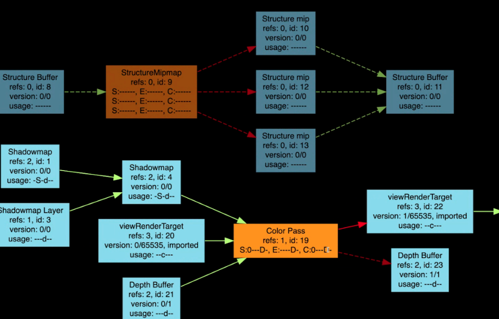

FrameGraph
FrameGraph is a framework within Filament for computing resources needed to render a frame. The framework enables declaring dependencies between resources.
For example, when rendering shadows, we would need to first compute and store the shadow map into a texture resource, and then the later color pass would then sample that texture to attenuate the final output color. That creates a dependency on the shadow map from the color pass. Filament uses FrameGraph to declare that dependency.
Details
Dependency Graph
The core of this framework is a class that defines a dependency graph — that is, the class defines nodes and connections between nodes. This class makes assumptions about the types of its nodes. Like many other classes within Filament, this class is without virtual function declaration to avoid paying the cost of virtual calls.
This class has additional functions to detect whether there is a cycle in the graph, and it is able to cull unreachable nodes.
FrameGraph
A frame graph consists of two types of nodes
- Resource
- This represents a generic resource such as a texture
- 90% of the time, this is a texture.
- Pass
- This represents a "computation/rendering process"
- It takes a set of resources
- It outputs a set of resources
Edges can be created in the following three directions:
- Resource → Pass = A read
- Pass → Resource = A write
- Resource → Resource = A resource/subresource relationship.
An example
To better understand FrameGraph, we consider the following graphical representation of a real graph. In this graph, blue nodes denote "Resources" and orange nodes denote "Passes."

In this graph, we see that the "Color Pass" takes as input the "Shadowmap", which has edges going into it, meaning that it's a texture array. The output of the "Color Pass" are "viewRenderTarget" and "Depth Buffer."
Note that there is an outgoing edge from "viewRenderTarget", where the color buffer will be used as input in the post-processing passes. But since "Depth Buffer" is not relevant to the rest of the rendering, it does not have an outgoing edge.
Since the graph is guaranteed to be acyclic, we can produce a dependency-respecting ordering of the nodes by traversal of the graph (e.g. topological sort).
Example code
We take a snippet of in production code to look through the details of building a graph.
struct StructurePassData {
FrameGraphId<FrameGraphTexture> depth;
FrameGraphId<FrameGraphTexture> picking;
};
...
// generate depth pass at the requested resolution
auto& structurePass = fg.addPass<StructurePassData>("Structure Pass",
[&](FrameGraph::Builder& builder, auto& data) {
bool const isES2 = mEngine.getDriverApi().getFeatureLevel() == FeatureLevel::FEATURE_LEVEL_0;
data.depth = builder.createTexture("Structure Buffer", {
.width = width, .height = height,
.levels = uint8_t(levelCount),
.format = isES2 ? TextureFormat::DEPTH24 : TextureFormat::DEPTH32F });
// workaround: since we have levels, this implies SAMPLEABLE (because of the gl
// backend, which implements non-sampleables with renderbuffers, which don't have levels).
// (should the gl driver revert to textures, in that case?)
data.depth = builder.write(data.depth,
FrameGraphTexture::Usage::DEPTH_ATTACHMENT | FrameGraphTexture::Usage::SAMPLEABLE);
if (config.picking) {
data.picking = builder.createTexture("Picking Buffer", {
.width = width, .height = height,
.format = isES2 ? TextureFormat::RGBA8 : TextureFormat::RG32F });
data.picking = builder.write(data.picking,
FrameGraphTexture::Usage::COLOR_ATTACHMENT);
}
builder.declareRenderPass("Structure Target", {
.attachments = { .color = { data.picking }, .depth = data.depth },
.clearFlags = TargetBufferFlags::COLOR0 | TargetBufferFlags::DEPTH
});
},
[=, renderPass = pass](FrameGraphResources const& resources,
auto const&, DriverApi&) mutable {
Variant structureVariant(Variant::DEPTH_VARIANT);
structureVariant.setPicking(config.picking);
auto out = resources.getRenderPassInfo();
renderPass.setRenderFlags(structureRenderFlags);
renderPass.setVariant(structureVariant);
renderPass.appendCommands(mEngine, RenderPass::CommandTypeFlags::SSAO);
renderPass.sortCommands(mEngine);
renderPass.execute(mEngine, resources.getPassName(), out.target, out.params);
}
);
The addPass method creates a node and it take in two lambda functions as its
parameter. The first lambda sets up the resources that will be used in the
execution of the Pass. This lambda is executed immediately and synchronously when
addPass is called. The second lambda is the actual execution of the pass; it is
executed when the graph has been completed and is traversed.
What does it do?
In the above, we see through a graph and code what a frame graph looks like and how to build it. We provide here a more detailed description of what it does:
- Manages the lifetime of the resources
- Know how the resources are allocated, when it is used, and when it can be freed
- Calculates the usage bit of the texture resource
- The usage bit is used to indicate what the resources are used for: for example, will it be blitted to or sampled from?
- Calculates the load/store bits of the rendertargets within a renderpass.
- For example, if we are rendering into a texture, we would want to mark it with the bit "keep" as oppose to "discard".
Additional details
- In a previous version of FrameGraph, there were only edges between Resource and Pass. For example, a Pass and Pass edge would not make logical sense. The following iteration, allowed for edges between two Resource nodes to indicate that one is a subresource of another (i.e. a layer in a mip-mapped texture).
- There are two extra features of FrameGraph that are important but has a lot
subtlety, and, incidentally, their inclusion added great complexity to the
implementation
- Importing/exporting resources outside of the graph
- In most cases, the graph and its resources are "alive" for only for a frame.
- For techniques like TAA (Temporal Anti-aliasing), we need to be able to import past output into the current FrameGraph
- Importing/exporting resources outside of the graph
- Future Work
- For CPU only passes, explore multi-threading and re-ordering of the Pass nodes
- A graphical debugger for online debugging session in the spirit of
matdbg.
- "RenderGraph" might be a more fitting name for this framework.